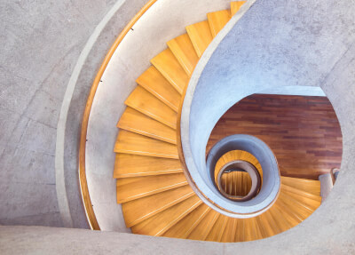
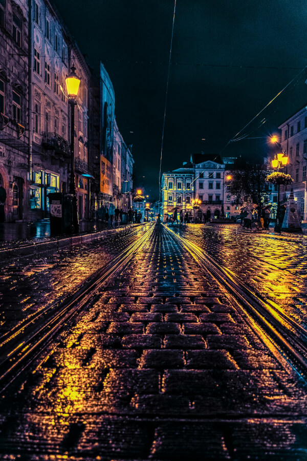

en esta clase se vieron los diferentes maneras para usar las imagenes y tener un mejor rendimiento, y como no es lo mismo ponerlas para ordenadores como para celulares con el uso de srcset
si le da a inspeccionar y juega con los tamaños de pixeles de panatalla, se dará cuenta que hay configuraciones diferentes

